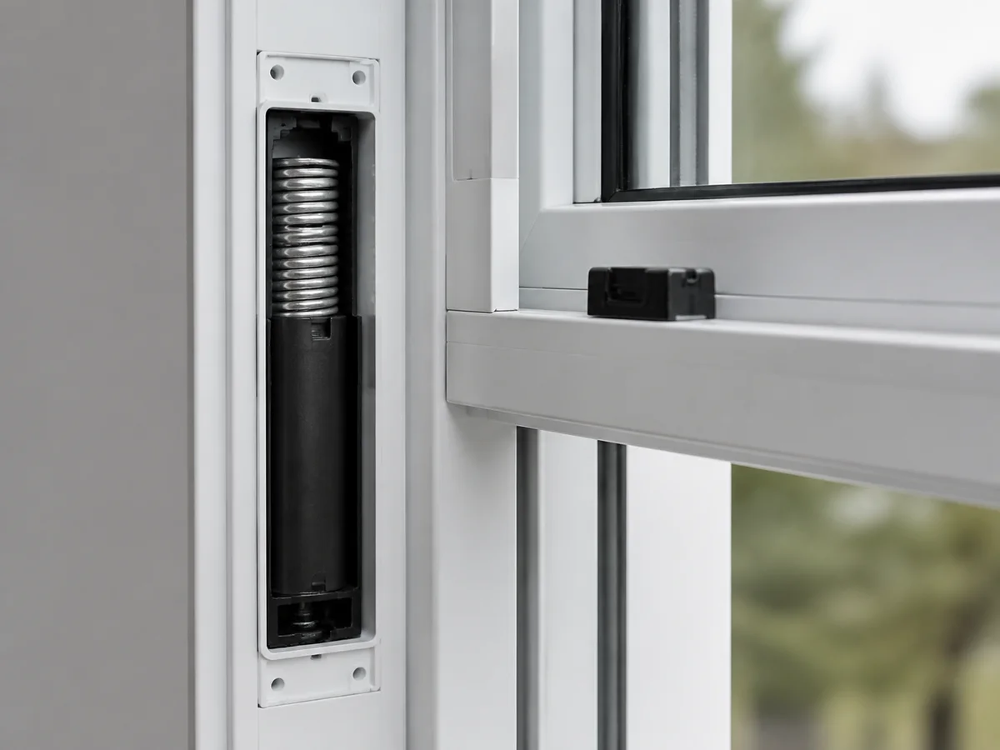
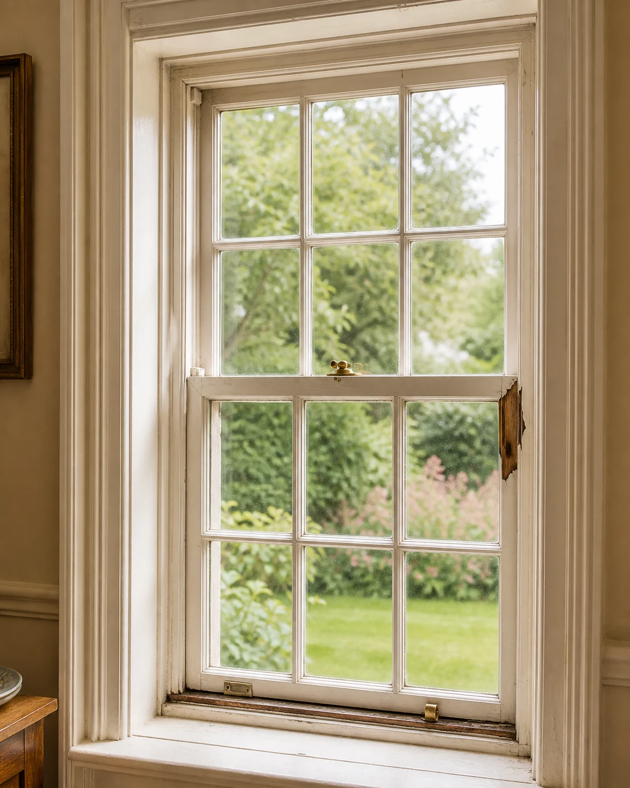
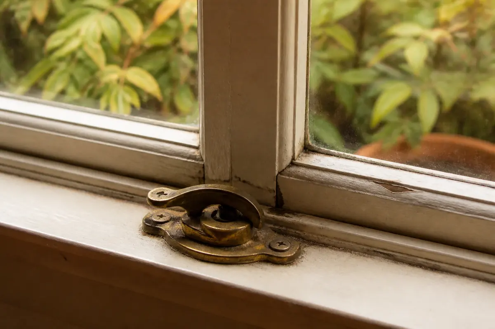

Sash balances and springs
Support components may affect whether a sash moves normally and stays open.
A difficult window does not always point to the same solution. Describe how the unit operates, where damage appears and whether the concern affects one opening or several. Window Match may share the request with independent local providers experienced in relevant repairs.
Describe the repair concern
Paint buildup, alignment, swelling or worn components may affect movement.
Balances, springs or other support hardware may need attention.
Movement in the sash or frame can prevent normal locking.
Handles, cranks, hinges and rollers can wear or break.
Small areas of deterioration may call for an inspection before full replacement is considered.
Seals, flashing, trim or alignment may require professional evaluation.

Operation, visible wear, hardware and access help determine what a provider should inspect first.

Operation and construction can differ across window generations.
Available identifying information may help locate relevant components.
Wood, composite and metal assemblies have different repair considerations.
Localized concerns may call for a different scope than widespread deterioration.
Replacement parts depend on the opening and component design.
Floor level and adjacent finishes can affect inspection and access.
Some conditions can be repaired while others may make replacement more practical. Only an on-site provider can inspect the unit and recommend a scope.
Describe the movement, hardware or frame concern so an independent provider can decide whether the project fits their work.